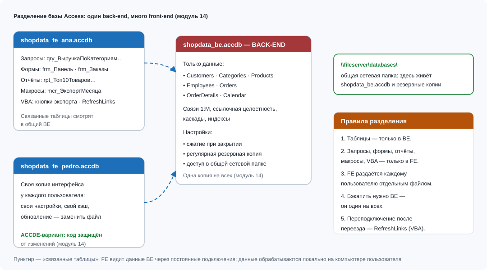

Модуль 14Оптимизация, разделение базы и обслуживание
Цели обучения
База, которую вы собрали за 13 модулей, перестала быть учебным упражнением: в неё пишут несколько человек, файл растёт, а неудачный action-запрос может стереть данные за секунду. Этот короткий модуль блока «Эксплуатация» учит содержать решение в рабочем состоянии. По итогам модуля студент сможет:
- проводить сжатие и восстановление базы вовремя и безопасно, отличая режим для FE от режима для BE, и объяснять лимит 2 ГБ;
- использовать Анализ производительности и Анализ таблиц как диагностические инструменты, а не как «магию ускорения»;
- подбирать индексы под конкретные запросы (поля WHERE, JOIN, ORDER BY) и оценивать их цену при массовой загрузке;
- выполнять разделение базы Мастером разделения, поддерживать связи через Диспетчер связанных таблиц и процедуру RefreshLinks;
- организовывать резервное копирование BE и вести месячный регламент обслуживания, готовый для итогового проекта.
Необходимые предварительные знания
Модуль опирается на материальные следы предыдущих блоков: вам нужны собранные таблицы со связями (модули 02–03), action-запросы (модуль 08), кнопки и макросы (модули 09, 11), чтение VBA (модуль 12) и сохранённые операции обмена (модуль 13). Разделение базы не меняет логики запросов, но меняет «географию» объектов — поэтому важно помнить, что лежит в таблицах, а что в формах.
- Если вы пропустили модуль 03, свяжите хотя бы пары Customers — Orders и Orders — OrderDetails: без целостности обсуждение BE теряет смысл.
- Если вы не запускали ни одного UPDATE или DELETE из модуля 08, сначала сделайте это на копии — именно перед такими операциями мы будем учиться снимать резервные копии.
- Код RefreshLinks в этом модуле читается на уровне модуля 12: цикл For Each по коллекции TableDefs и свойства Connect/RefreshLink.
Теория
Файл Access ведёт себя как неухоженный шкаф: записи удаляются и добавляются, страницы данных фрагментируются, и файл раздувается даже там, где данных меньше, чем кажется. Команда «Сжать и восстановить базу данных» (Файл → Сведения) перепаковывает файл, дефрагментирует страницы и заодно сбрасывает недошедшие значения Счётчика после массовых удалений. Для FE полезно включить автосжатие при закрытии (Файл → Параметры → Текущая база данных → «Сжимать при закрытии»), а вот для BE это вредно: сжатие требует монопольного доступа, и включённое у первого закрывшегося пользователя оно заблокирует файл всем остальным. BE сжимают вручную, в согласованное окно обслуживания. Помните и о жёстком потолке: размер файла .accdb — 2 ГБ, и никакая оптимизация его не поднимет.
Два штатных анализатора дополняют картину. Анализ производительности (Работа с базами данных → Анализ производительности) проходит по объектам и предлагает конкретные улучшения — чаще всего индексы по полям соединений и фильтров; рекомендации можно применять выборочно. Анализ таблиц (Table Analyzer) решает другую задачу: он разбирает «плоский» лист Excel-вида на нормализованные таблицы и связывает их. Для ShopData нормализация уже выполнена вручную, поэтому Анализ таблиц здесь — инструмент понимания, а не ежедневной работы: он показывает, как Access «видит» повторяющиеся данные.
Индексы — главный ручной рычаг скорости запроса. Правило отбора простое: индексируйте поля, по которым вы фильтруете (WHERE), соединяете (JOIN) и сортируете (ORDER BY). В ShopData это прежде всего Orders.OrderDate (все периодные отчёты), Orders.ManagerID и Orders.CustomerID (ключи соединений), плюс внешние ключи OrderDetails. Поле OrderDetails.UnitPrice участвует в умножении внутри SUM — индекс ему не поможет; CustomerName лишь выводится на экран — тем более. У индекса есть цена: каждая вставка строки пересчитывает все его индексы, поэтому при массовой загрузке staging-таблиц их создают уже после заливки, а не до. Композитный индекс (например, OrderStatus + OrderDate) помогает запросам с двумя условиями сразу, но не заменяет отдельные индексы по каждому полю.

Разделение базы — это стандарт производства, а не опция для энтузиастов. Мастер разделения (Работа с базами данных → База данных Access) переносит все таблицы в новый файл BE (у нас shopdata_be.accdb) и заменяет их в текущей базе связанными таблицами; всё остальное — запросы, формы, отчёты, макросы, модули — остаётся в FE (shopdata_fe.accdb). Почему это работает: по сети летят только данные запросов, а не формы и сетки; FE каждому пользователю копируют отдельно, поэтому обновление интерфейса не затрагивает данные; BE один, и только он подлежит резервному копированию. Где что живёт после разделения — в таблице ниже.
| Объект | BE (shopdata_be.accdb) | FE (shopdata_fe.accdb) | Комментарий |
|---|---|---|---|
| Таблицы с данными | Да — единственное место | Нет (только связанные) | Локальные таблицы в FE допустимы лишь для staging и временных данных |
| Связи и целостность | Да | Нет | Каскадные правила тоже живут в BE |
| Запросы qry_… | Нет | Да, все | Включая action-запросы: они читают и пишут данные BE через связи |
| Формы frm_/sfrm_ | Нет | Да | Обновление интерфейса = замена копии FE |
| Отчёты rpt_ | Нет | Да | PDF-выгрузки из модуля 13 работают без изменений |
| Макросы mcr_ и модули VBA | Нет | Да | Включая RefreshLinks и кнопки экспорта |
| Спецификации импорта/экспорта | Обычно нет | Да, у каждой копии свои | Эталонные спецификации раздают через «Спецификации…» (модуль 13) |
| Сохранённые операции обмена | Обычно нет | Да | Пути к файлам обмена стоит указывать по сети, а не на локальном диске |
| Резервные копии | Обязательно, до action-запросов | Не нужны | FE всегда можно пересобрать из мастера-копии |
| Сжатие | Вручную в окно обслуживания | Автосжатие при закрытии — можно | Сжатие BE требует монопольного доступа |
Резервное копирование сводится к одному принципу: данные — это BE. Копию BE снимают при закрытой базе и всегда до запуска action-запросов; FE не копируют вовсе — её пересобирают из мастер-версии. Отдельно предусмотрите переподключение: когда BE переезжает на другой диск или сервер, у всех пользователей «отваливаются» таблицы. Исправляется это либо Диспетчером связанных таблиц (вручную), либо небольшой процедурой RefreshLinks, которая проходит по коллекции TableDefs и обновляет строку подключения у каждой связанной таблицы — полный код в эталонном решении. Для защиты кода от случайных правок FE компилируют в ACCDE (Файл → Сохранить как → Только исполнение): формы и код работают, но не редактируются.
Пошаговая демонстрация
Разделим учебную базу ShopData.accdb на BE и FE, настроим обслуживание и снимем первую резервную копию. Работайте на копии базы: мастер разделения меняет структуру необратимо.
- Закройте базу и сделайте копию ShopData.accdb → ShopData_before_split.accdb. Разделение легко сделать заново, а вот «собрать обратно» одной кнопкой нельзя.
- Откройте ShopData.accdb. Вкладка Работа с базами данных → группа Движение данных → кнопка «База данных Access» (Access Database).
- В диалоге мастера разделения нажмите «Разделить базу данных».
- Укажите имя и расположение BE: для упражнения — C:\ShopData\be\shopdata_be.accdb, в реальной работе — путь на общем ресурсе. Нажмите Разделить и дождитесь сообщения об успешном завершении.
- Посмотрите в область навигации: у всех таблиц появились стрелки — это связанные таблицы. Откройте frm_Заказы, добавьте тестовый заказ, затем откройте shopdata_be.accdb — запись лежит там.
- Переименуйте текущую базу в shopdata_fe.accdb и положите мастер-копию в отдельную папку: каждую раздачу вы будете копировать именно её.
- Работа с базами данных → Диспетчер связанных таблиц: «Выделить все», флажок «Всегда запрашивать новое местоположение» → ОК → укажите актуальный путь к BE. Так перенастраивают решение после переезда BE.
- Настройте сжатие: Файл → Параметры → Текущая база данных → флажок «Сжимать при закрытии» — только для FE. В BE этот параметр не включайте.
- Работа с базами данных → Анализ производительности → вкладка «Все типы объектов» → «Выделить все» → ОК. Просмотрите рекомендации: типично Access предложит индекс по Orders.ManagerID или Orders.OrderDate — примените и запишите, что именно применили.
- Снимите резервную копию BE: закройте все сеансы Access, скопируйте shopdata_be.accdb в C:\ShopData\backup\shopdata_be_2018-06-30.accdb. Дата в имени — часть регламента, а не украшение.
- Скомпилируйте FE для раздачи: откройте shopdata_fe.accdb → Файл → Сохранить как → тип «Только исполнение (ACCDE)» → shopdata_fe.accde. Проверьте, что формы работают, а конструктор недоступен.
- Проверьте переподключение: временно переименуйте папку be в be_old и запустите процедуру RefreshLinks_BE (код в разделе «Эталонное решение») с исправленным путём — связи восстановятся без Диспетчера.
Пример из работы аналитика
Во вторник утром Мария получает сообщение от двух коллег: «База тормозит, а у тебя не открыться — файл занят». Разбор показывает классическую картину первого года жизни Access-решения: все трое работают с одним и тем же файлом ShopData.accdb на общем диске, формы с сетками тянутся по сети целиком, а ночной сжатие-макрос «подвис», потому что кто-то остался в базе. Каждое открытие таблицы — это поездка за данными и за интерфейсом одновременно.
Мария выполняет ровно те шаги, что описаны в демонстрации: копия базы → Мастер разделения → shopdata_be.accdb на общем ресурсе \\SRV\ShopData\be\ → shopdata_fe.accdb каждому пользователю в личную папку → Диспетчер связанных таблиц → автосжатие только в FE → ACCDE для раздачи. В frm_Панель добавляется кнопка «Обновить связь с BE», вызывающая RefreshLinks_BE, — теперь переезд BE перестаёт быть аварией. Резервная копия BE снимается перед каждой пятничной сессией обновления цен, а ежемесячный регламент (сжатие BE, Анализ производительности, проверка восстановления из бэкапа) Мария повесила как повторяющуюся задачу в календарь.
Результат измерим: время открытия frm_Заказы на слабом ноутбуке упало с заметных секунд до долей секунды, потому что по сети передаются только записи; «файл занят» исчез из лексикона команды; а после случайного UPDATE по всем категориям (вместо automotivo) восстановление заняло две минуты из копии shopdata_be_2018-06-28.accdb. Именно этот сценарий — разделённая база с регламентом — вы будете сдавать в итоговом проекте.
Исходные таблицы и поля
Разделение не меняет содержимого таблиц, но меняет взгляд на них: теперь это объекты, за скоростью доступа к которым вы отвечаете. Ниже — фрагмент Orders и индексная карта, которую мы применяем к ShopData.
| OrderID | CustomerID | ManagerID | OrderStatus | OrderDate |
|---|---|---|---|---|
| O-10001 | C-0001 | 2 | delivered | 2017-03-15 |
| O-10002 | C-0002 | 1 | delivered | 2017-04-02 |
| O-10005 | C-0004 | 4 | shipped | 2017-10-30 |
| O-10007 | C-0006 | 1 | delivered | 2018-01-17 |
| O-10010 | C-0008 | 6 | processing | 2018-04-22 |
| Таблица.Поле | Как используется запросами | Индекс | Обоснование |
|---|---|---|---|
| Orders.OrderDate | WHERE по периодам, ORDER BY | Обычный, допускаются совпадения | Каждый периодный отчёт фильтрует даты |
| Orders.ManagerID | JOIN с Employees | Обычный | Ключ соединения qry_ВыручкаНаМенеджера |
| Orders.CustomerID | JOIN с Customers | Обычный | Внешний ключ связи 1—М |
| OrderDetails.OrderID | JOIN с Orders | Обычный | Самое «горячее» соединение курса |
| Orders.OrderStatus | WHERE по статусам | Обычный (низкая избирательность — по необходимости) | Полезен на больших объёмах, в мини-датасете незаметен |
| OrderDetails.UnitPrice | Умножение внутри SUM | Не создаём | Индекс не ускоряет вычисления, но замедляет вставки |
Первичный ключ каждой таблицы и уникальные индексы (CategoryName, SellerID) уже созданы в модулях 02–03 — они автоматически сопровождены индексами. Задача этого модуля — не пересоздать их, а осознанно добавить недостающие под запросы и не насыпать лишних.
SQL-код и разбор по строкам
Показательный «пациент» оптимизации — параметрический запрос qry_ЗаказыПоПериоду: он фильтрует по датам, соединяет три таблицы и сортирует результат. Именно на таких запросах индексы дают разницу между секундами и минутами на полных объёмах данных (порядка сотен тысяч заказов в наборе из раздела «Датасеты»).
PARAMETERS [Введите начальную дату] DateTime,
[Введите конечную дату] DateTime;
SELECT o.OrderID, o.OrderDate, o.OrderStatus,
c.CustomerName, c.City,
e.EmployeeName AS Manager
FROM (Customers AS c
INNER JOIN Orders AS o ON c.CustomerID = o.CustomerID)
INNER JOIN Employees AS e ON o.ManagerID = e.EmployeeID
WHERE o.OrderDate BETWEEN [Введите начальную дату] And [Введите конечную дату]
ORDER BY o.OrderDate, o.OrderID;PARAMETERS [Введите начальную дату] DateTime, [Введите конечную дату] DateTime;— явное объявление типов: без него Access сравнивает дату как текст, фильтр молча врёт, а оптимизатор не построит план с использованием индекса по OrderDate.SELECT o.OrderID, o.OrderDate, o.OrderStatus,— поля шапки заказа; их немного — это не случайность: широкие выборки гоняют по сети больше байтов, а в разделённой базе это чувствительно.c.CustomerName, c.City, e.EmployeeName AS Manager— справочные поля из Customers и Employees; соединения нужны только ради этих подписей.FROM (Customers AS c INNER JOIN Orders AS o ON c.CustomerID = o.CustomerID)— соединение по ключам CustomerID: у Customers это PK с индексом, у Orders нужен индекс на внешнем ключе.INNER JOIN Employees AS e ON o.ManagerID = e.EmployeeID— вторая связь по ManagerID; если Анализ производительности предложил индекс — вот ради этой строки.WHERE o.OrderDate BETWEEN [Введите начальную дату] And [Введите конечную дату]— главный кандидат на индекс: для периода в три месяца Access читает узкий диапазон индекса вместо всей таблицы.ORDER BY o.OrderDate, o.OrderID;— сортировка по индексированному полю может отдаваться почти бесплатно; второе поле делает порядок детерминированным при совпадающих датах.
Индекс по дате создаётся один раз и живёт в BE: CREATE INDEX idx_Orders_OrderDate ON Orders (OrderDate); — либо мышью в конструкторе таблицы (Свойства поля → Индексированное: «Да, допускаются совпадения»). После массовых загрузок staging в индексированные таблицы включайте индексы обратно в конце, а не в начале.
Вариант через конструктор запросов
Тот же qry_ЗаказыПоПериоду собирается мышью, а индекс добавляется в конструкторе таблицы — покажем оба приёма.
- Создание → Конструктор запросов; добавьте Customers, Orders, Employees.
- Перетащите поля OrderID, OrderDate, OrderStatus, CustomerName, City, EmployeeName; у EmployeeName задайте псевдоним в строке «Поле»: Manager: EmployeeName.
- Проверьте линии связей: CustomerID и ManagerID должны соединиться автоматически из схемы данных.
- В строке «Условие отбора» под OrderDate введите Between [Введите начальную дату] And [Введите конечную дату].
- Откройте Конструктор → Параметры запроса и объявьте оба параметра с типом «Дата/время» — это аналог строки PARAMETERS из SQL-режима.
- В строке «Сортировка» для OrderDate и OrderID выберите «по возрастанию»; сохраните запрос как qry_ЗаказыПоПериоду и проверьте на периоде 01.01.2018–31.03.2018.
- Индекс: откройте Orders в конструкторе таблиц, выделите поле OrderDate, в свойствах поля задайте Индексированное: Да, допускаются совпадения, сохраните таблицу. Повторите для ManagerID.
- Проверка инструментов: Работа с базами данных → Анализ производительности → вкладка «Запросы» → qry_ЗаказыПоПериоду — анализатор не должен больше предлагать индексы по полям, которые вы уже создали.
Ожидаемый результат
База разделена: в shopdata_be.accdb — 7 таблиц и связи, в shopdata_fe.accdb — запросы, формы, отчёты, макросы и модули. qry_ЗаказыПоПериоду за период 2018-01-01…2018-03-31 возвращает ровно 3 заказа; индексы по Orders.OrderDate и Orders.ManagerID созданы; резервная копия BE лежит в C:\ShopData\backup\ с датой в имени.
| OrderID | OrderDate | OrderStatus | CustomerName | City | Manager |
|---|---|---|---|---|---|
| O-10007 | 2018-01-17 | delivered | Felipe Alves | porto alegre | Ana Souza |
| O-10008 | 2018-02-14 | delivered | Gabriela Lima | salvador | Maria Oliveira |
| O-10009 | 2018-03-08 | delivered | Bruno Carvalho | rio de janeiro | Ana Souza |
Прогресс-маркеры эксплуатации: в области навигации FE у таблиц видны стрелки связей; при открытии BE отдельным сеансом виден файл .laccdb, пока FE подключена; после «Сжать и восстановить» размер BE уменьшается (запишите размер до и после в README — на защите это любят спрашивать). На мини-датасете выигрыш от индексов неощутим — проверяйте их на связанном полном датасете из раздела «Датасеты» либо принимайте на веру таблицу «обоснование» выше.
Типичные ошибки
Симптом: после разделения у коллег «Не удаётся найти файл …shopdata_be.accdb». Причина: BE оставлен на локальном диске того, кто делил базу, — остальные до него не достучаться. Лечение: перенести BE на общий ресурс и обновить связи: Диспетчер связанных таблиц с флажком «Всегда запрашивать новое местоположение» или процедура RefreshLinks_BE.
Симптом: база «мигает», появляются зависшие .laccdb, пользователи жалуются на блокировки в середине дня. Причина: включено «Сжимать при закрытии» у BE — сжатие требует монопольного доступа, и первый закрывшийся пользователь блокирует файл остальным. Лечение: автосжатие выключить для BE и оставить только для FE; BE сжимать вручную в окно обслуживания.
Симптом: массовая заливка 50 тысяч строк в OrderDetails «замирает» на старте. Причина: на таблице висит пачка индексов, и каждая вставка пересчитывает их все. Лечение: заливать staging без индексов, а индексы создавать после загрузки; постоянные индексы держать только на полях WHERE/JOIN/ORDER BY.
Симптом: UPDATE пересчитал цены по всем 15 строкам вместо одной категории automotivo, откатить нечем. Причина: action-запрос запущен без резервной копии BE. Лечение: правило «копия BE перед любым action-запросом»; для табличных правок — сначала SELECT INTO Products_Backup, потом UPDATE с WHERE p.CategoryID = 5.
Симптом: при двух и более пользователях формы тормозят и всплывают конфликты записи. Причина: все работают из одной общей FE — по сети летают формы и сетки, а записи блокируют друг друга. Лечение: одна копия FE на пользователя, BE один на ресурсе; обновление интерфейса — заменой копии FE или ACCDE.
Симптом: после раздачи новой FE запрос жалуется на отсутствующее поле, хотя «вчера работало». Причина: структуру таблицы меняли в одной из копий FE, а не в BE. Лечение: железное правило: структуру меняют только в BE; после изменений прогнать Диспетчер связанных таблиц и обновить мастер-версию FE.
Практические советы
Папка backup со схемой имени shopdata_be_ГГГГ-ММ-ДД.accdb и двумя уровнями хранения: четыре недельных копии и три месячных. Копия, которую ни разу не разворачивали для проверки, — это не копия, а надежда.
Ведите в README простую метрику: размер BE до и после сжатия, раз в неделю. Если файл прибавляет больше 10% в неделю без роста данных — где-то копятся временные таблицы или мусор action-запросов.
ACCDE — это замок от случайностей, а не защита от специалистов: правки кода ведите в мастер-ACCDB, потом перекомпилируйте и раздайте. Храните версию сборки в README, чтобы знать, чья копия FE новее.
Диспетчер связанных таблиц — после каждого переезда BE, но для пользователей проще кнопка с RefreshLinks_BE на frm_Панель: пусть переезд BE остаётся вашей работой, а не их проблемой.
Лимит 2 ГБ — повод планировать архив: старые годы выносите запросом SELECT INTO в архивную базу и удаляйте DELETE-запросом из рабочей (обе операции — только после копии BE). Рабочая база обязана оставаться лёгкой.
Самостоятельная работа
Выполните полный цикл эксплуатации на своей учебной базе: разделение, настройка связей и сжатия, индексы под qry_ЗаказыПоПериоду, резервная копия BE, ACCDE и заполненный регламент. Заданий-карточек в этом модуле нет — ваша «сдача» это работающая разделённая база и регламент, который вы реально повесите в календарь. Отметьте шаги по мере выполнения:
Регламент обслуживания ShopData (вставьте в календарь)
Этот чек-лист — эксплуатационный минимум, который войдёт в итоговый проект как часть блока «Эксплуатация». Частоты подобраны под учебный темп; в боевой базе их сверяют с SLA.
Тест по модулю
Контрольные вопросы
- Почему сжатие возвращает место на диске, но не ускоряет медленный запрос? Что ускоряет запрос на самом деле?
- Опишите, что происходит с таблицами при работе Мастера разделения и что видит пользователь в области навигации после него.
- Почему резервную копию BE снимают при закрытой базе и обязательно до action-запросов? Что произойдёт, если скопировать «живой» файл?
- Когда ACCDE полезен, а когда мешает работе? Кто и как вносит правки в решение, раздачное как ACCDE?
- Как перенести BE на другой сервер так, чтобы пользователям не пришлось ничего делать руками? Какие два инструмента вы назовёте?
Критерии проверки
| Критерий | Отлично | Допустимо | Брак |
|---|---|---|---|
| Разделение базы | BE и FE на своих местах, связи работают, пути актуальны, проверено добавлением записи | Разделено, но пути обновляются вручную при каждом запуске | Таблицы не связаны или BE недоступен пользователям |
| Индексы | Созданы по OrderDate и ManagerID с обоснованием в README; лишних нет | Один индекс по OrderDate | Индексы насыпаны на все поля или отсутствуют вовсе |
| Сжатие | FE — автосжатие, BE — разовое ручное, размеры зафиксированы в README | Сжатие выполнено разово, без замеров | Сжатие не проводилось или автосжатие включено у BE |
| Резервные копии | Копия BE с датой в backup\, восстановление проверено на копии | Копия есть, восстановление не проверяли | Копий нет или они делаются при открытой базе |
| ACCDE | Скомпилирован, проверен пользователем, версия зафиксирована | FE раздаётся как ACCDB | Раздача не организована |
| Регламент обслуживания | Чек-лист заполнен, перенесён в README и календарь | Чек-лист заполнен частично | Регламент отсутствует |
Эталонное решение
Показать полное решение самостоятельной работы
1. Разделение. Копия ShopData_before_split.accdb → Работа с базами данных → База данных Access → Разделить базу данных → путь C:\ShopData\be\shopdata_be.accdb → дождаться сообщения. В области навигации у таблиц появятся стрелки; текущая база становится FE — сохраните её как shopdata_fe.accdb.
2. Обновление связей. Работа с базами данных → Диспетчер связанных таблиц → Выделить все → флажок «Всегда запрашивать новое местоположение» → ОК → указать C:\ShopData\be\shopdata_be.accdb. Проверка: откройте frm_Заказы, добавьте тестовый заказ O-99999 и убедитесь, что он появился в BE; удалите тестовую запись.
3. Сжатие. Для FE: Файл → Параметры → Текущая база данных → «Сжимать при закрытии». Для BE: закрыть все сеансы, открыть BE с зажатым Shift (без автозапуска), Файл → Сведения → «Сжать и восстановить базу данных»; запишите размер до/после в README.
4. Индексы. В SQL-режиме любой «пустого» запроса выполните по очереди:
CREATE INDEX idx_Orders_OrderDate ON Orders (OrderDate);
CREATE INDEX idx_Orders_ManagerID ON Orders (ManagerID);Либо конструктором таблицы: поле OrderDate → свойство «Индексированное: Да, допускаются совпадения», то же для ManagerID. Затем Работа с базами данных → Анализ производительности → убедитесь, что по этим полям рекомендаций больше нет.
5. Резервная копия. Закройте Access полностью; в проводнике скопируйте shopdata_be.accdb → C:\ShopData\backup\shopdata_be_2018-06-30.accdb. Проверка восстановления: скопируйте её в be_test\, откройте, выполните SELECT COUNT(*) FROM Orders (12 строк), закройте и удалите тестовую копию.
6. ACCDE. Откройте мастер-копию shopdata_fe.accdb → Файл → Сохранить как → «Только исполнение (ACCDE)» → shopdata_fe.accde → Сохранить. Откройте ACCDE: формы и отчёты работают, правый клик по форме не предлагает конструктор.
7. Кнопка RefreshLinks_BE. В мастер-копии FE создайте стандартный модуль mdl_Служебный и вставьте процедуру:
Sub RefreshLinks_BE()
' Переподключение всех связанных таблиц к актуальному файлу BE.
' Запускать после переезда shopdata_be.accdb на другой диск или сервер.
Dim db As DAO.Database
Dim tdf As DAO.TableDef
Dim strBE As String
Dim n As Integer
strBE = CurrentProject.Path & "\be\shopdata_be.accdb" ' при другой структуре папок поправьте путь
If Len(Dir(strBE)) = 0 Then
MsgBox "Файл BE не найден: " & strBE, vbCritical
Exit Sub
End If
Set db = CurrentDb
n = 0
For Each tdf In db.TableDefs
If Len(tdf.Connect) > 0 Then ' интересуют только связанные таблицы
tdf.Connect = ";DATABASE=" & strBE ' новая строка подключения
tdf.RefreshLink ' применяем сразу
n = n + 1
End If
Next tdf
Set db = Nothing
MsgBox "Обновлено связей: " & n, vbInformation, "Подключение к BE"
End SubКак читать код: у связанных таблиц свойство Connect непустое и содержит строку вида «;DATABASE=путь»; мы перезаписываем путь и вызываем RefreshLink для каждой таблицы. Ссылка на DAO (Microsoft Office XX.0 Access database engine Object Library) в ACCDB подключена по умолчанию. Повесьте процедуру на кнопку frm_Панель (мастер кнопок: Разное → Выполнить функцию не нужен — назначьте «Обработка событий» и вызовите RefreshLinks_BE) и проверьте, переименовав папку be в be_old: кнопка честно сообщит «Файл BE не найден», верните имя — связь восстановится.
8. Регламент. Перенесите чек-лист m14-service в README.txt с частотами и фамилией ответственного. Именно этот файл и работающая разделённая база сдаются в модуле 15 как блок «Эксплуатация» итогового проекта.
Краткое резюме
База переведена в производственный режим: данные живут в одном BE на общем ресурсе, интерфейс размножен копиями FE, сжатие и бэкапы привязаны к регламенту, индексы создаются под конкретные WHERE/JOIN/ORDER BY, а переезд BE перестал быть аварией благодаря Диспетчеру связанных таблиц и процедуре RefreshLinks. Вы готовы собирать всё с нуля и под ключ: модуль 15 — итоговый аналитический проект «Панель магазина ТехноДом», где эти операции станут обязательным блоком «Эксплуатация» на 10 баллов из 100.